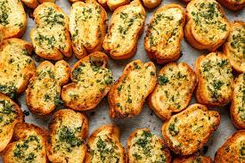

Garlic Toast

Description
Its Toast with Garlic. Its awesome.
The garlicky flavor on toast with a bit of cheese. Muy delicioso. Nothing more needs to be said about a simple
but devastatingly god tier appetizer
Ingredients
- 1 loaf of bread
- 50 grams of chedder cheese
- 50 grams of mozzarella cheese
- 8 cloves of garlic
- 50 grams of melted butter
Steps
- Slice the bread into medium sized slices
- Mix the shredded cheese and the melted butter
- Mash the garlic cloves and mix with butter mixture
- Spread the mixture on the bread slices
- Put on a pan and set in oven for 400F for 7 mins
- Serve hot and enjoy
Back to home